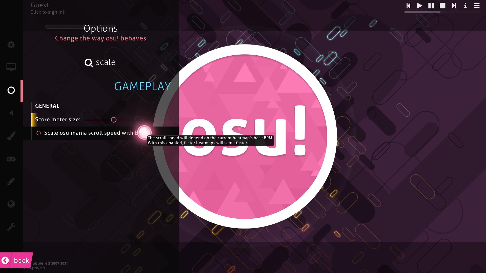

How To Get Gud at Osu!Mania
2/12/2021 by: ZuKi
Harro╰(*°▽°*)╯
So I'm assuming you are already somewhat Familiar with the game and wanna improve at the game but dont know how? Don't worry these tips work on both 7Key and 4Key so let's get started.
I. Skins
Like I said in the previous blog post, having skin is very very very crucial for you to improve faster or slower. So find a skin you comfortable with and don't dont strain your eyes so change as fast as you can.
There are 3 common type of skins:
Arrows

Rectangle Bars

Circles

II. Fixed Scroll Speed
If you are familar Taiko you will see that scroll speed in taiko is unstable and randomize to the map, In mania however we need a stable scroll speed to play easier and improve at stable rate.
So in order to make scroll speed stable go to settings > search for scale > unmark that setting
This will make scroll speed of every map the same execpt those with SVs, so this will help us a lot on improving faster.
III. Find your prefered scroll speed
This is very important so you don't click too early or too late on the notes.
In order to find your preferred scroll speed follow these steps:
Go to edit mode

Select any song

Press F5 to enter test mode

Max out your scroll speed with CRTL + =

Then try to play with it. If you think it's too fast then lower it until you find the comfortable one

You got it? noice! Let's go to another one
IV. Learn how to play intuitively not learn how to play certain patterns
This may sound odd but do NOT learn how to play a certain patterns but learn how to play intuitively instead. That's because there are almost infinity amount of patterns in VSRG so just learn how to control your fingers to click a certain notes when it comes down/ goes up instead and eventually you will get a muscle memories and that's the most important thing in VSRG.
V. Take a break for sometimes
Yes, play more help you improve but sometimes you gotta take a break because our fingers were not designed to handle tasks like this so take care of yourself.
VI. Enjoy the game
Yes, you are right enjoy the game cuz why play something you dont enjoy? Thank you for reading my blog post see you next time and have fun playing VSRG!